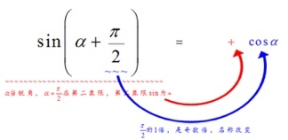

📗和差公式
💡正弦和
sin(α+β)=sinα·cosβ+cosα·sinβ "赛扣+扣赛"
💡余弦和
cos(α+β)=cosα·cosβ−sinα·sinβ "扣扣-赛赛"
💡正切和
tan(α+β)=tanα+tanβ1−tanα·tanβ
推导过程如下:
tan(α+β)=sin(α+β)cos(α+β)
=sinαcosβ+cosαsinβcosαcosβ−sinαsinβ
上下两边同除cosαcosβ得原式:
=tanα+tanβ1−tanαtanβ
💡正弦, 余弦, 正切的两角之差公式
同学们可自行写出
📗倍角公式
💡正弦倍角
sin2α=2sinαcosα
推导过程如下:
sin2α=sin(α+α)
=sinαcosα+cosαsinα
=2sinαcosα
用梅花阵勾股定理可得:
sin2α=(sinα+cosα)2−1,
用梅花阵勾股定理可得:
sin2α=2tanα1+tan2α
💡余弦倍角
cos2α=cos2α−sin2α
推导过程如下:
cos2α=cos(α+α)
=cosαcosα−sinαsinα
=cos2α−sin2α
用梅花阵勾股定理可得:
cos2α=2cos2α−1
用梅花阵勾股定理可得:
cos2α=1−2sin2α
用梅花阵勾股定理可得:
cos2α=1−tan2α1+tan2α
💡正切倍角
tan2α=2tanα1−tan2α
推导过程如下:
tan2α=tan(α+α)
=tanα+tanα1−tanαtanα
=2tanα1−tan2α
📗诱导公式
💡π/2偶数倍
sin(π−x)=sinx
推导过程如下1: (用和差公式推导)
sin(π−x)=sinπcosx−cosπsinx
=0·cosx−(−1)·sinx
=sinx
"(π2的倍数) 奇变偶不变, (暂时把x先看成锐角) 符号看象限"
推导过程如下2: (用口诀推导)
前半句:π是π2的偶数倍,所以右边写出sinx
后半句:暂时把x先看成锐角,于是π−x在第二象限,得sin(π−x)为正,所以右边写出+
合起来:sin(π−x)=+sinx
💡π/2奇数倍
sin(x+π2)=cosx

📗合一公式
💡正弦和逆推
a·sinx+b·cosx=a2+b2‾‾‾‾‾‾‾‾√sin(x+φ)
(其中:sinφ=ba2+b2√,φ∈(−π2,π2),a是正数)
推导过程如下:
sin(x+φ)=sinxcosφ+cosxsinφ
=sinxaa2+b2√+cosxba2+b2√
=1a2+b2√(asinx+bcosx)
到底了